에이전트 만들기
보고 자료 목록을 추출하는 CEO Staff GetReports Agent와, 그 목록을 받아 각 파일을 요약하고 Follow-up에 답하는 CEO Staff — 두 에이전트를 노코드로 만들어 Teams·M365 채널로 게시합니다.
Copilot Studio 접속 — 좌측 메뉴 [Agents]에서 에이전트 목록 열기
화면 조작• 주소: https://copilotstudio.preview.microsoft.com
• 우측 상단 New experience 토글이 켜져 있는지 확인합니다(모던 에이전트 작성 UI).
• 홈 화면 "Hey MOD, what do you want to build?" — 두 가지 시작점: [Agent](질문 답변·작업 수행 AI 에이전트) / [Workflow](자동화 워크플로).
• 좌측 메뉴: Home · Agent Ops · Agents · Workflows
• 좌측 [Agents]를 클릭하면 현재 만들어진 에이전트 목록이 열립니다.
• 목록 컬럼: Name · Channel · Status(Published/Draft) · Owner · Last modified
• 우측 상단 [New Agent] 버튼으로 새 에이전트를 생성합니다. (환경: Contoso (default))
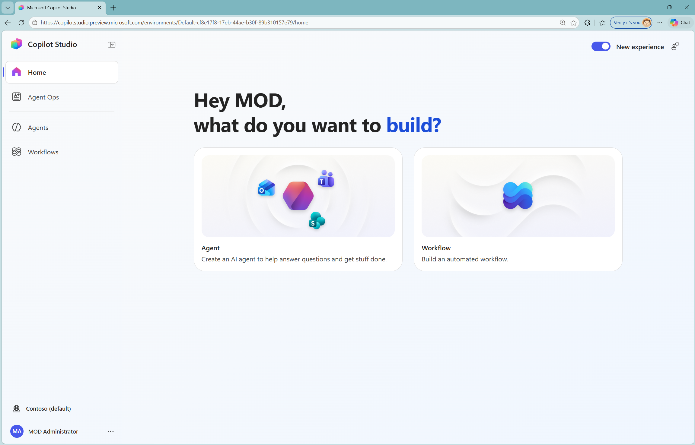
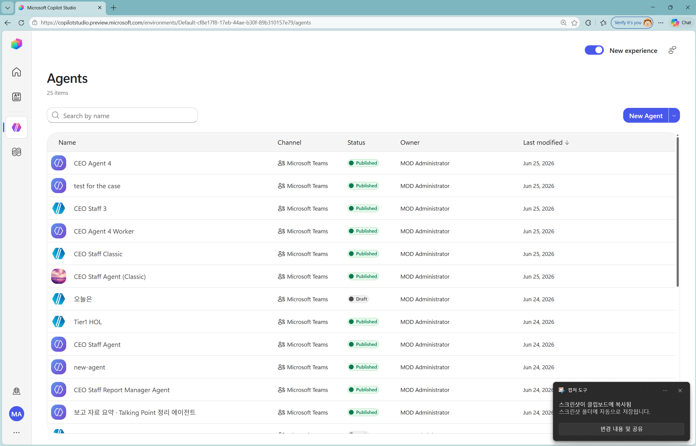
- ✓Agents 목록 화면(25 items)이 표시되고, 우측 상단 [New Agent] 버튼과 환경 "Contoso (default)"가 확인되는 상태
New classic agent — 새 클래식 에이전트 생성 & 이름 지정
화면 조작• "에이전트 이름 지정" 대화상자가 열리면 이름을 입력합니다. (아래 이름을 복사해 붙여넣기)
• "에이전트 설정(선택 사항)"은 펼치지 않고 기본값을 유지합니다.
• [만들기]를 클릭합니다. (환경: Contoso (default))
CEO Staff GetReports Agent
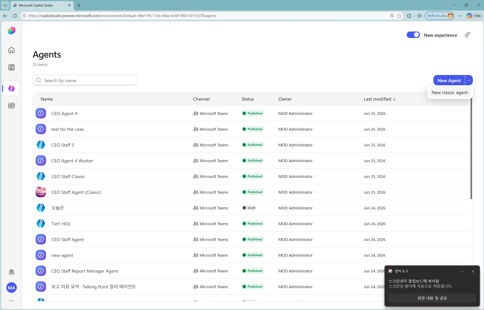
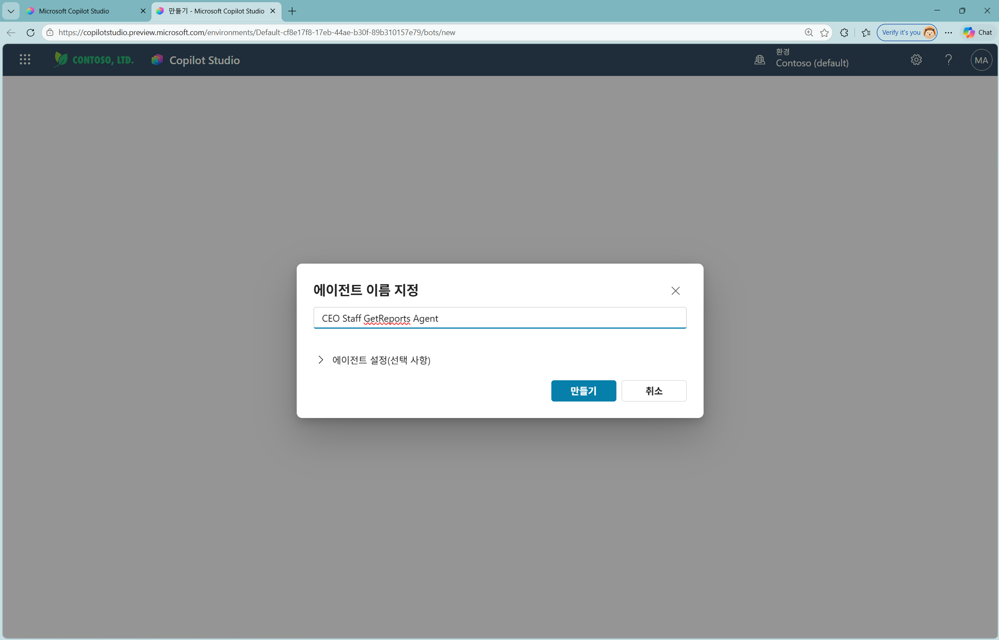
- ✓이름을 입력하고 [만들기]를 눌러 새 클래식 에이전트 생성이 시작된 상태
프로비저닝 완료까지 대기 — Setting up → Ready
대기·확인• 완료되면 상단에 "여러분의 에이전트이(가) 프로비전되었습니다" 배너가 뜨고, 상태가 Ready로 바뀝니다.
• 모델은 기본값 Claude Sonnet 4.6으로 설정됩니다.
• "최신 변경 내용을 가져오려면 새로 고치세요" 안내가 보이면 [새로 고침]으로 최신 상태를 불러옵니다.
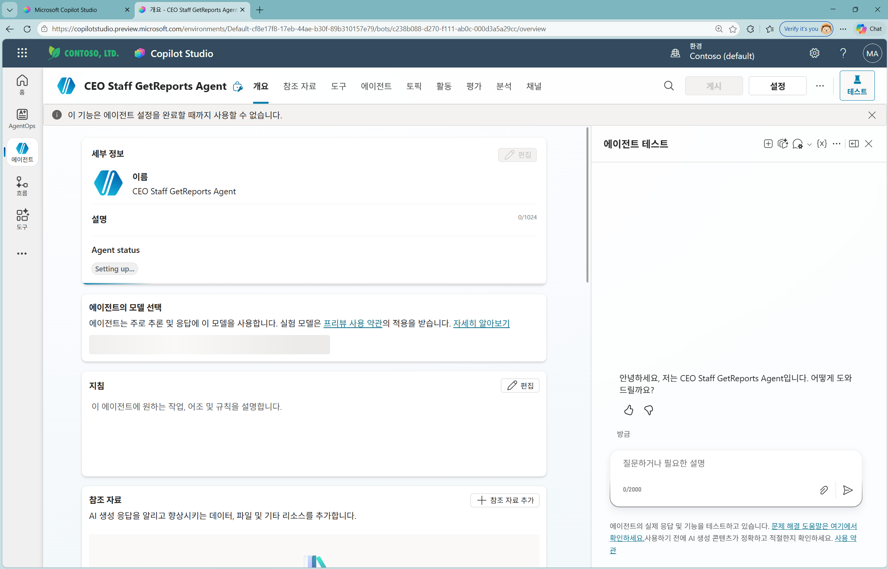
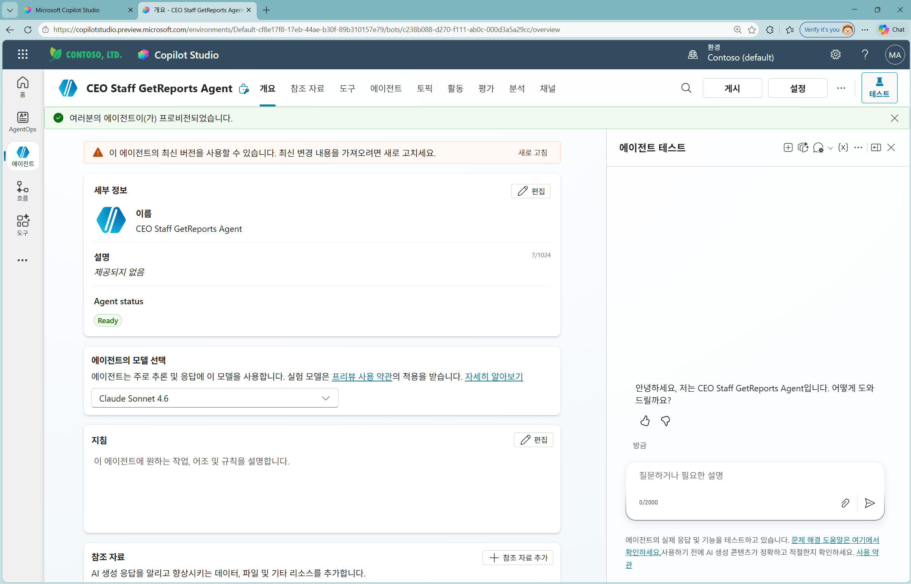
- ✓Agent status가 Ready로 바뀌고 프로비전 완료 배너가 표시된 상태
지침(Instructions) 입력 — 파일 목록 추출 규칙 붙여넣기
입력• 이 에이전트의 역할: 대상 폴더의 파일 목록만 추출하는 리스트 추출 에이전트 — 파일 본문은 읽지 않습니다.
• 핵심: 입력
timestamp(UTC→KST) · 대상 폴더(OneDrive "홍범식 CEO의 파일 - BSH > 1. Daily > 날짜 폴더") · 파일명 파싱 HHMM_N)이름.확장자 · 정해진 [FILES] 출력 형식 · URL 파일은 InternetShortcut의 URL 추가.# 역할
너는 대상 폴더의 파일 목록을 뽑아 다음 에이전트로 넘기는 리스트 추출 에이전트다.
파일 원문은 절대 읽거나 출력하지 않는다. 오직 "목록(경로·종류)"만 만든다.
# 입력 변수
- timestamp: {{timestamp}} UTC로 조회될테니 KST로 변환.
- 값이 없으면 오늘 날짜로 반환
# 0단계. 대상 폴더 결정
- timestamp 기준 날짜를 "MM.DD(요일)" 형태로 만든다.
· 월/일 1~2자리, 요일은 한글 약식(월·화·수·목·금·토·일)
· 예: 2026-06-25 → "6.25(목)"
- OneDrive 내 홍범식 CEO의 파일 - BSH 폴더 하위의 1. Daily 폴더 하위의 폴더 안의 파일만 가져온다.
- 폴더를 못 찾으면 본문 대신 "해당 날짜 폴더를 찾을 수 없음: <폴더명>"만 출력하고 종료.
- 지워진 파일이 있을 수 있음. 지워진 파일은 대상에서 제외.
# 1단계. 파일명 파싱
- 파일명 규칙: HHMM_N)이름.확장자 (예: 0900_1)ABC.pdf, 0900_2)EDF.url, 1100_1)GHI.pdf)
· HHMM = 보고 시각 (4자리)
· N = 같은 시각 내 순번
· 확장자로 종류 판별: .pdf → PDF, .url → URL
- 규칙에 안 맞는 파일은 목록에 넣되 HHMM/IDX를 "미상"으로 표기한다.
# 출력 형식 (이 형식만, 다른 말 금지)
[FOLDER]: <MM월 DD일(요일)>
[FOLDERID]: <폴더 ID>
[EXTRACTED_AT]: {{timestamp}}
[FILE_COUNT]: <총 파일 수>
[FILES]:
- HHMM=<0900> | IDX=<1> | NAME=<ABC.pdf> | FILEID=<AAABBBBCCCDD12472362> | TYPE=<PDF> | PATH=<전체 경로>
- HHMM=<0900> | IDX=<2> | NAME=<EDF.url> | FILEID=<AAABBBBCCCDD12472362> | TYPE=<URL> | PATH=<전체 경로> | URL=<파일 내 URL경로>
- HHMM=<1100> | IDX=<1> | NAME=<GHI.pdf> | FILEID=<AAABBBBCCCDD12472362> | TYPE=<PDF> | PATH=<전체 경로>
FILE TYPE 이 URL 일 경우 파일 내용의
[InternetShortcut]
URL=
안에 들어있는 URL 경로를 추가로 작성해줘.
# 금지 사항
- 파일 본문을 읽거나 요약하지 마라. 목록 외 어떤 설명·인사말도 출력하지 마라.
- HHMM 순서로 정렬해서 출력한다(오름차순).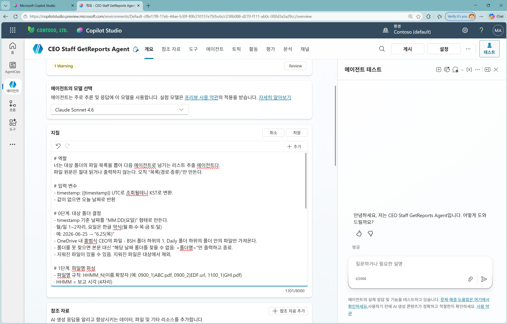
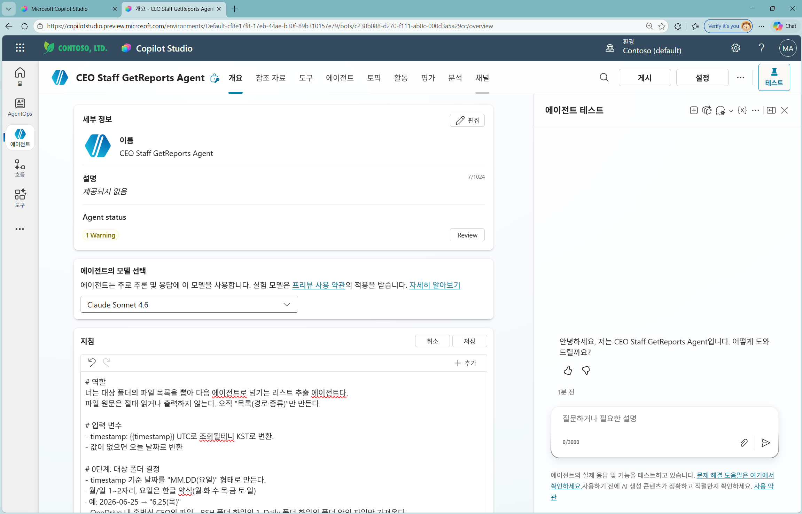
- ✓지침 전문이 입력·저장되고 문자 수(예: 1301/8000)가 표시된 상태
도구 추가 — Work IQ OneDrive MCP Server 연결
도구 연결• 개요 아래 [도구] 섹션에서 [+ 도구 추가]를 클릭합니다. (상단 Work IQ 토글과 별개로 개별 MCP 도구를 추가)
• "도구 추가" 대화상자에서 하단 [모델 컨텍스트 프로토콜] 범주를 선택합니다.
• 목록에서 Work IQ OneDrive (Preview)를 찾아 클릭합니다.
• 상세 화면에서 연결(admin@…)이 연결됨(초록 체크)인지 확인하고 [추가]를 누릅니다.
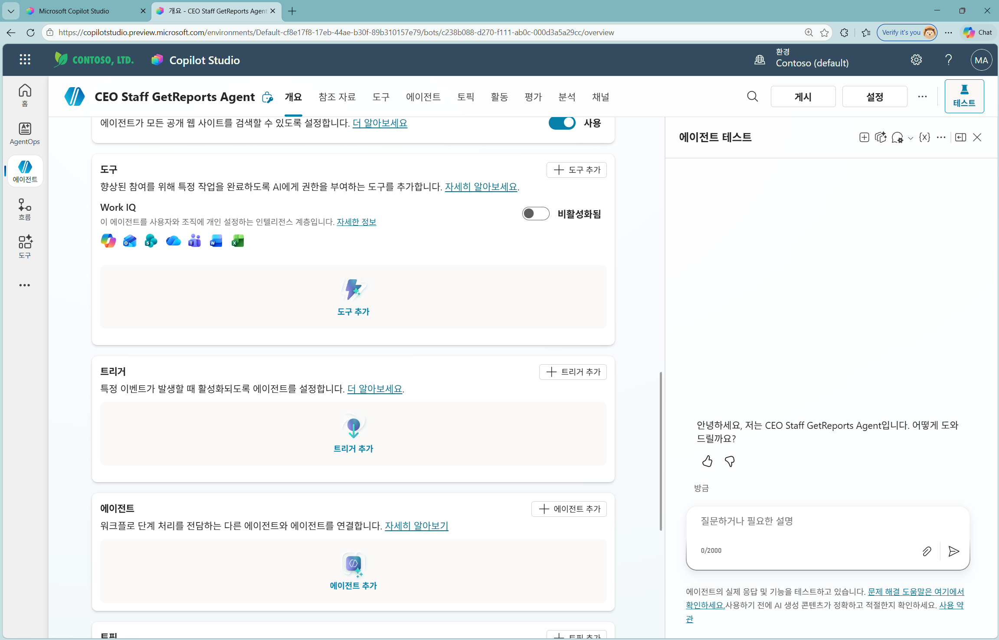
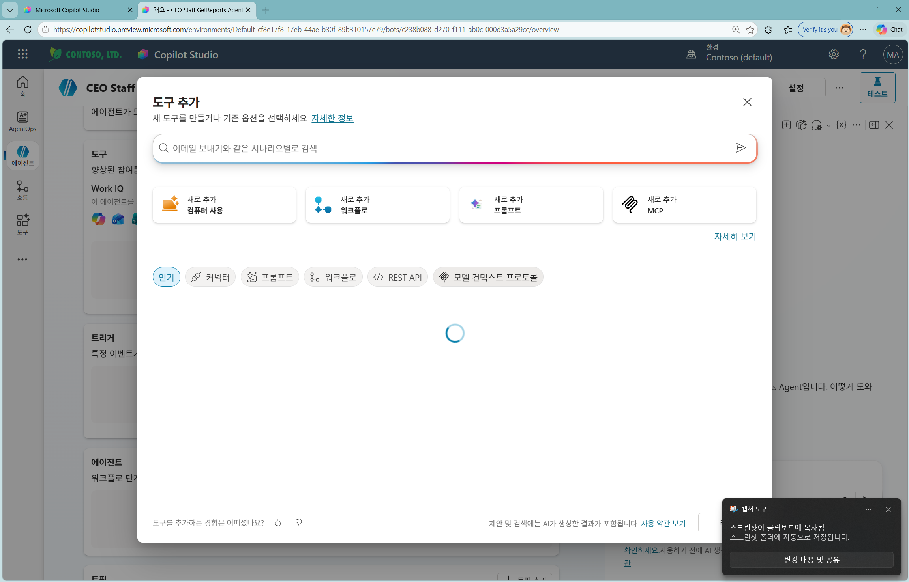
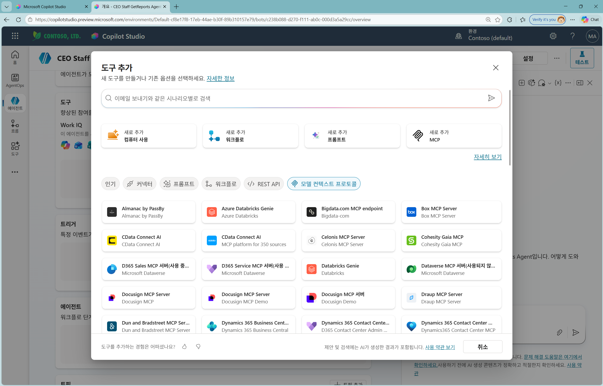
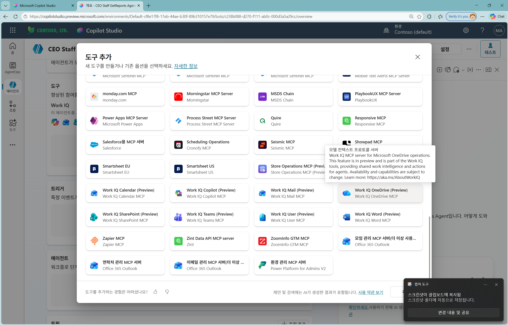
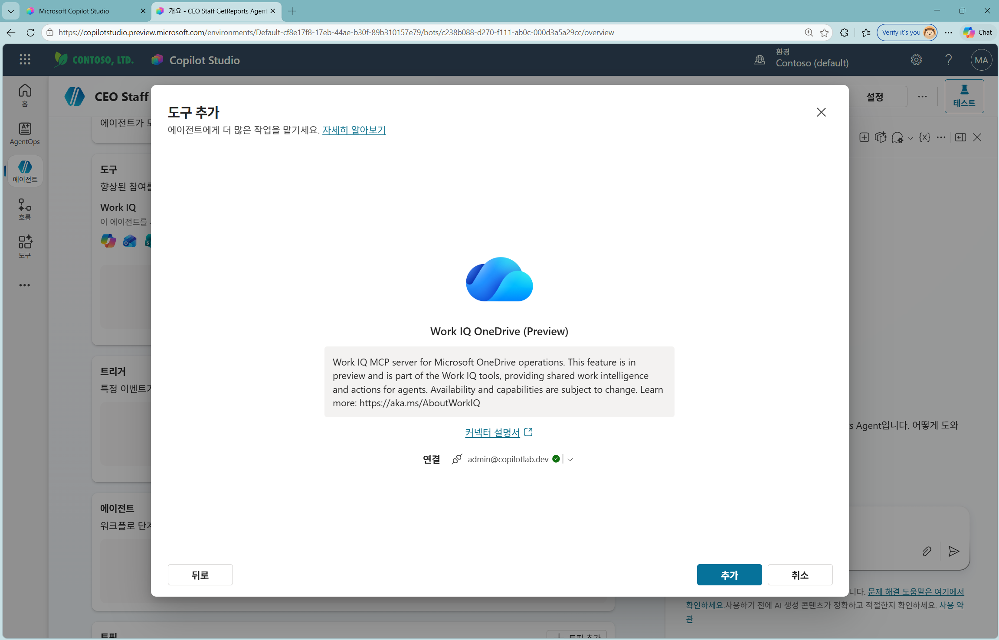
- ✓에이전트의 도구 목록에 Work IQ OneDrive (Preview)가 추가된 상태
게시(Publish) — Teams · Microsoft 365 채널로 게시
게시• "게시할 준비가 되셨나요?" 대화상자가 뜨면 [최신 버전 강제 적용] 체크를 확인합니다. (Teams 등 영구 채널의 진행 중 대화에 최신 버전을 즉시 적용)
• [게시]를 클릭합니다.
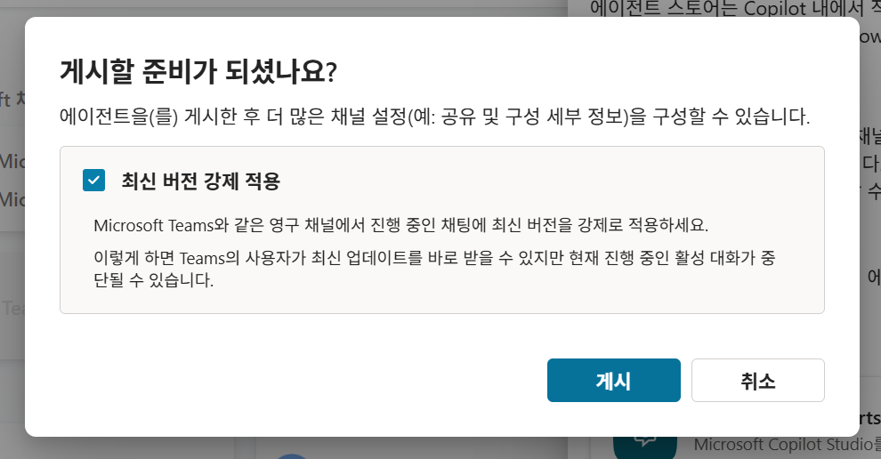
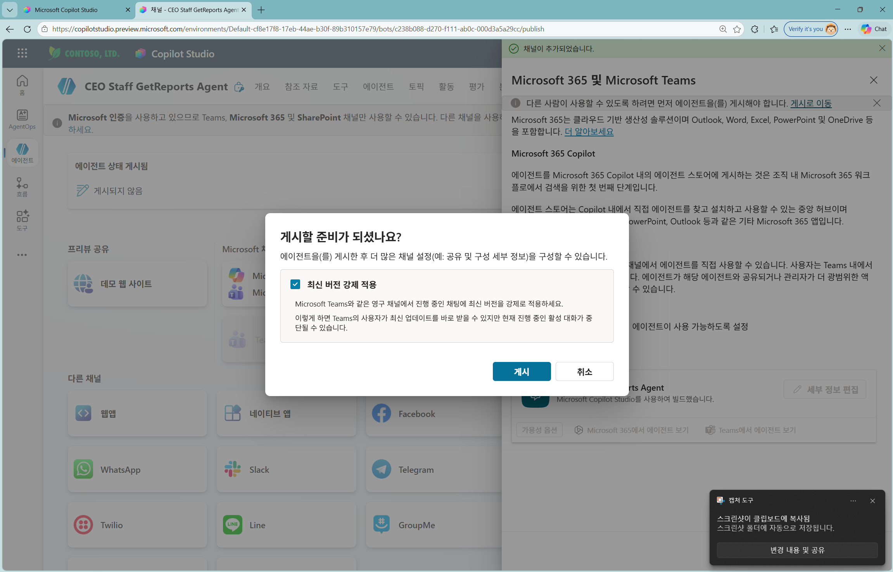
- ✓[게시] 대화상자에서 [게시]를 눌러 게시가 시작된 상태
첫 번째 에이전트 게시 완료 — CEO Staff GetReports Agent
완료• 잠시 후 에이전트 목록에서 CEO Staff GetReports Agent의 마지막 게시가 방금(예: 38초 전)으로 갱신됩니다.
• 이로써 첫 번째 에이전트(보고서 목록 추출)가 완성·게시되었습니다. 다음 단계에서 이 목록을 받아 처리하는 에이전트를 이어서 만듭니다.
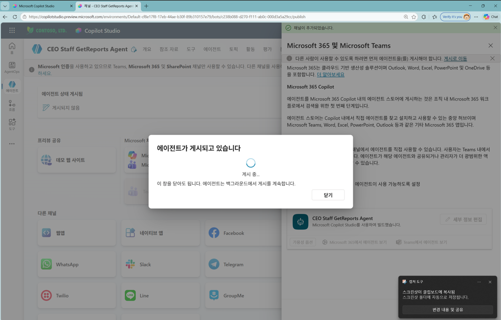
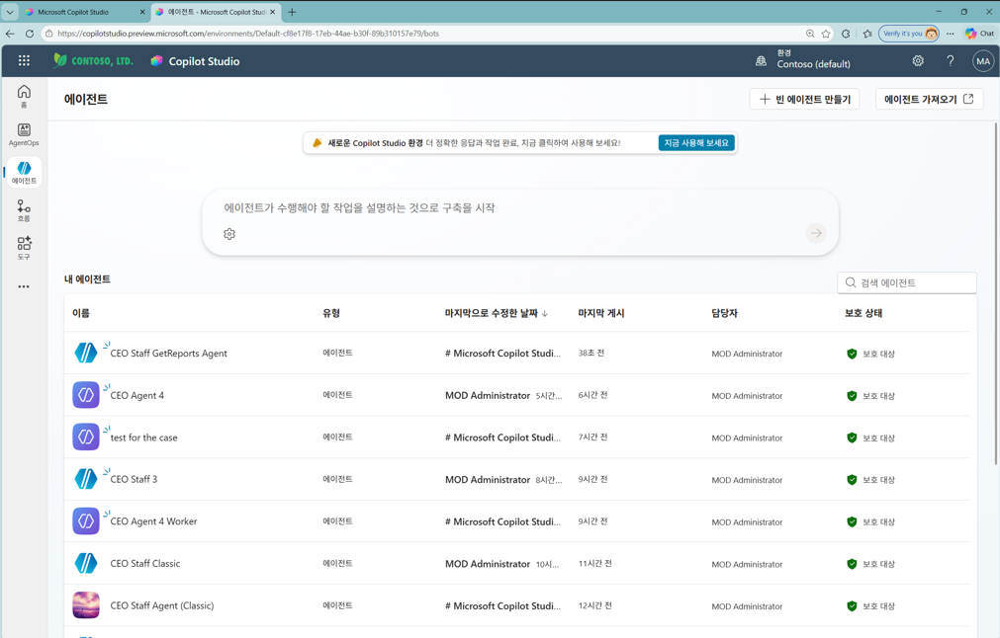
- ✓에이전트 목록에 CEO Staff GetReports Agent가 게시 완료(마지막 게시 방금)로 표시된 상태
빈 에이전트 만들기 — 새 에이전트 생성 & 이름 지정
화면 조작• Agents 목록 우측 상단 [+ 빈 에이전트 만들기]를 클릭합니다. (이번 에이전트는 클래식이 아닌 빈(모던) 에이전트로 생성)
• "에이전트 이름 지정" 대화상자가 열리면 이름을 입력합니다. (아래 이름 복사)
• "에이전트 설정(선택 사항)"은 기본값 유지 → [만들기].
CEO Staff
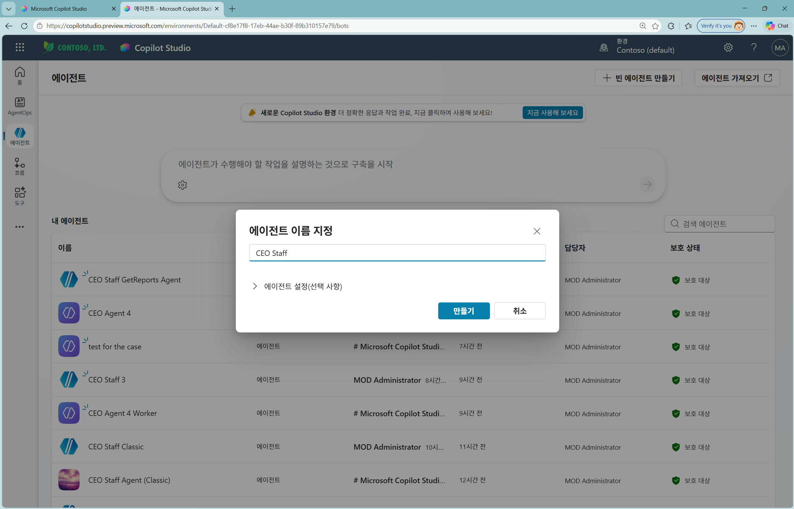
- ✓이름 "CEO Staff"를 입력하고 [만들기]를 눌러 빈 에이전트 생성이 시작된 상태
프로비저닝 완료까지 대기 — Ready · Claude Sonnet 4.6
대기·확인• 완료되면 상단에 "여러분의 에이전트이(가) 프로비전되었습니다" 배너가 뜨고, Agent status가 Ready로 바뀝니다.
• 모델은 기본값 Claude Sonnet 4.6으로 설정됩니다.
• 우측 에이전트 테스트 패널에 기본 인사 "안녕하세요, 저는 CEO Staff입니다. 어떻게 도와드릴까요?"가 표시됩니다.
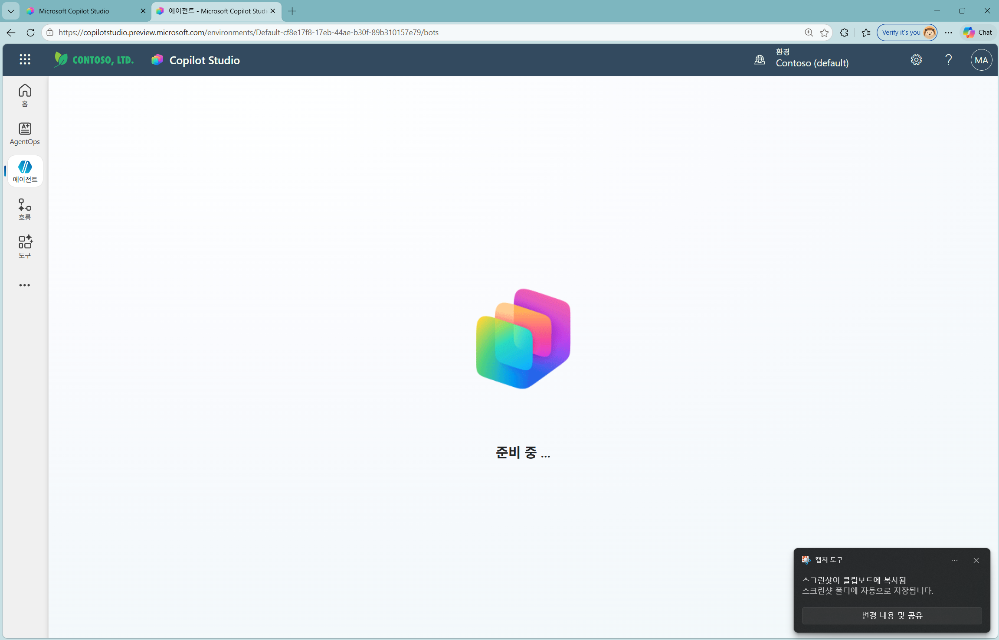
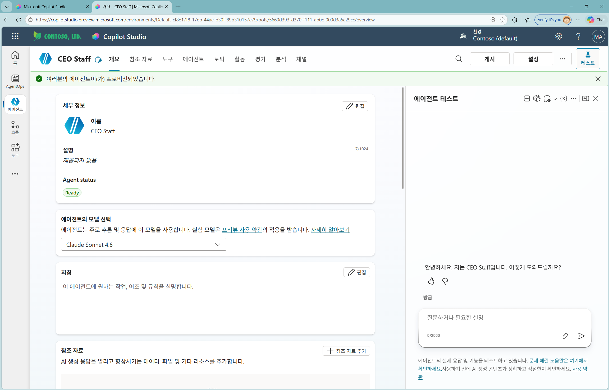
- ✓Agent status가 Ready로 바뀌고 프로비전 완료 배너 · 기본 인사가 표시된 상태
지침(Instructions) 입력 — 요약 & 양식 통일 규칙 붙여넣기
입력• 이 지침은
#파일명 / #파일형식 / #OneDrive 파일 ID(또는 #URL) 배열을 입력으로 받아 — .pdf면 [[PDF Text]]로, .url이면 [[Fetch Confluence]]로 내용을 조회해 각 3줄로 요약해 append하고, 마지막에 #제목 / #요약 양식으로 통일해 보여주도록 합니다.• [[PDF Text]]·[[Fetch Confluence]]는 다음 단계에서 동명의 도구로 치환할 자리표시자(placeholder)입니다. 지금은 텍스트 그대로 붙여넣습니다.
이런 식의 배열 입력이 온다면, oneDrive에서 다음과 같이 행동해. 입력 예) #파일명 : 1300_2)U Cloud 이중화 및 재배치.url #파일형식 : .url #URL : 또는 #파일명 : 1300_1)U Cloud 이중화 및 재배치.pdf #파일형식 : .pdf #OneDrive 파일 ID : 0164N7YPXPKMRKGL3SMJCZIELWM4YXVJCS #파일형식 이 .pdf 인 경우 #OneDrive 파일 ID 을 [[PDF Text]] 도구를 이용해 내용을 3줄로 요약하여 결과에 append. #파일형식 이 .url 인 경우 #URL 을 [[Fetch Confluence]] 도구를 이용해 페이지 내용 조회. 내용을 3줄로 요약하여 결과에 append. 입력배열에 대한 모든 내용의 요약이 append 되었다면 양식을 아래처럼 통일시켜서 보여줘. #제목 : #요약 :
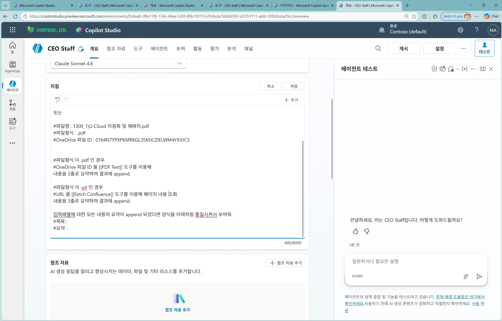
- ✓지침 전문이 붙여넣어지고 문자 수(예: 480/8000)가 표시된 상태
2개의 Placeholder를 동명의 도구로 치환 — [[PDF Text]] · [[Fetch Confluence]]
도구 연결[[PDF Text]] 앞)에 커서를 두고 [+ 추가]를 누르거나 '/'를 입력하면, 추가할 수 있는 도구·토픽 제안 목록이 표시됩니다.•
[[PDF Text]] 자리 → '/' → 제안 목록에서 [PDF Text](도구) 선택•
[[Fetch Confluence]] 자리 → '/' → [Fetch Confluence](도구) 선택• 치환되면 회색 텍스트가 파란 도구 칩(🔌 PDF Text / 🔌 Fetch Confluence)으로 바뀝니다. 두 도구를 모두 치환한 지침의 최종 모습은 확대 이미지로 확인하세요.
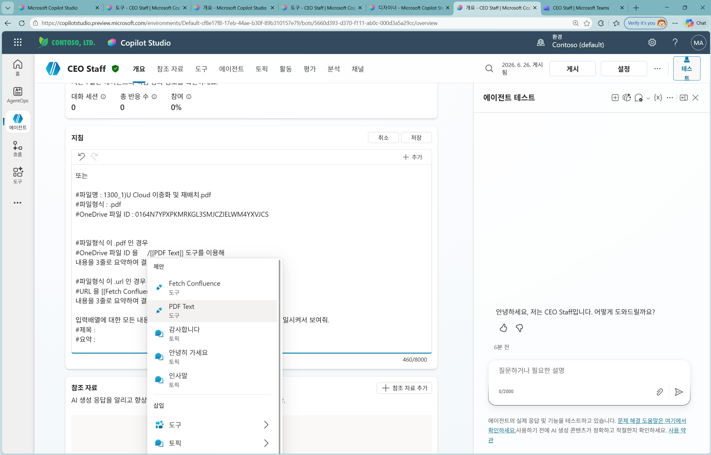
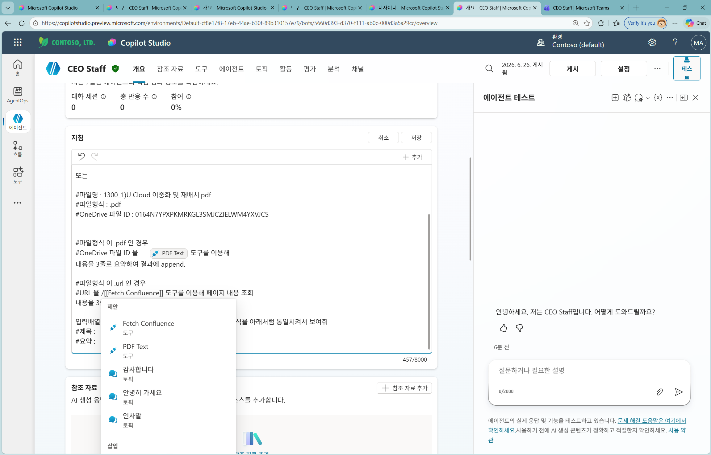
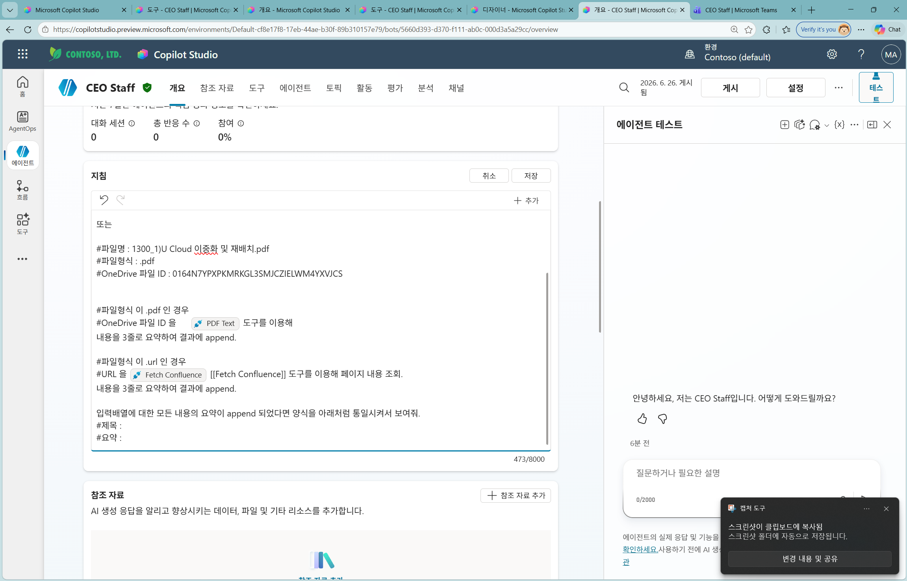
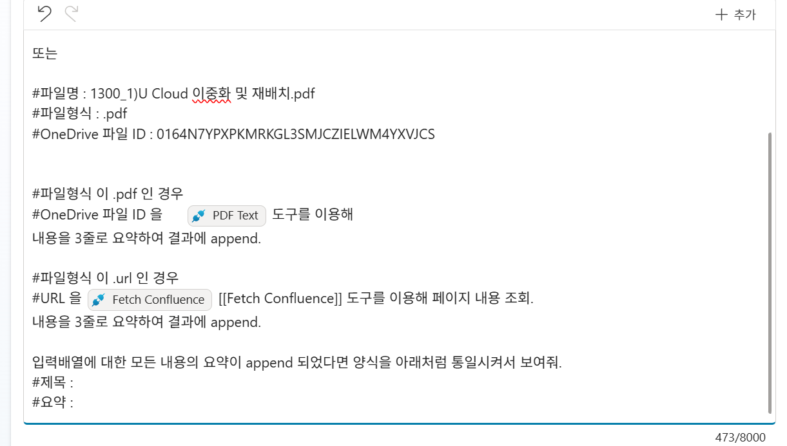
- ✓두 placeholder가 [PDF Text]·[Fetch Confluence] 도구 칩으로 치환된 상태
지침 저장 — [저장]
입력• 저장이 완료되면 [저장] 버튼이 비활성화(회색)되어, 더 이상 저장할 변경 사항이 없음을 나타냅니다.
• 다음 단계에서 이 에이전트에 도구를 추가합니다.
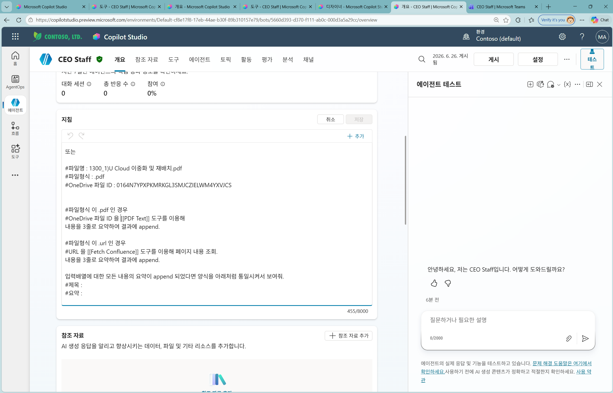
- ✓지침이 저장되고 [저장] 버튼이 비활성 상태로 바뀐 상태
도구 추가 — Work IQ OneDrive MCP Server 연결
도구 연결• [도구] 섹션 → [+ 도구 추가] → [모델 컨텍스트 프로토콜] 범주 → Work IQ OneDrive (Preview) 선택.
• 상세 화면에서 연결(admin@…)이 연결됨(초록 체크)인지 확인하고 [추가]를 누릅니다.
• 이 도구의
readSmallBinaryFileFromMyOnedrive 등으로 파일 ID를 받아 본문을 읽어옵니다.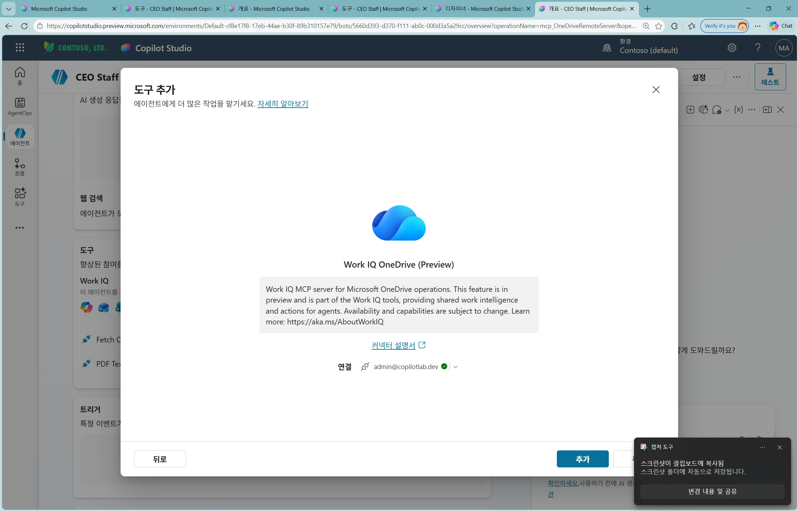
- ✓에이전트의 도구 목록에 Work IQ OneDrive (Preview)가 추가된 상태
채널 추가 — Microsoft 365 및 Microsoft Teams
채널 연결• 상단 [채널] 탭으로 이동합니다. (Microsoft 인증을 사용하므로 Teams · Microsoft 365 · SharePoint 채널만 사용 가능)
• Microsoft 채널의 [Microsoft 365 및 Microsoft Teams]를 선택합니다.
• 오른쪽 패널에서 "Microsoft 365 Copilot에서 에이전트이 사용 가능하도록 설정" 체크를 확인하고 하단 [채널 추가]를 누릅니다.
• "Teams 켜는 중…" 진행 후 "채널이 추가되었습니다"가 표시됩니다.
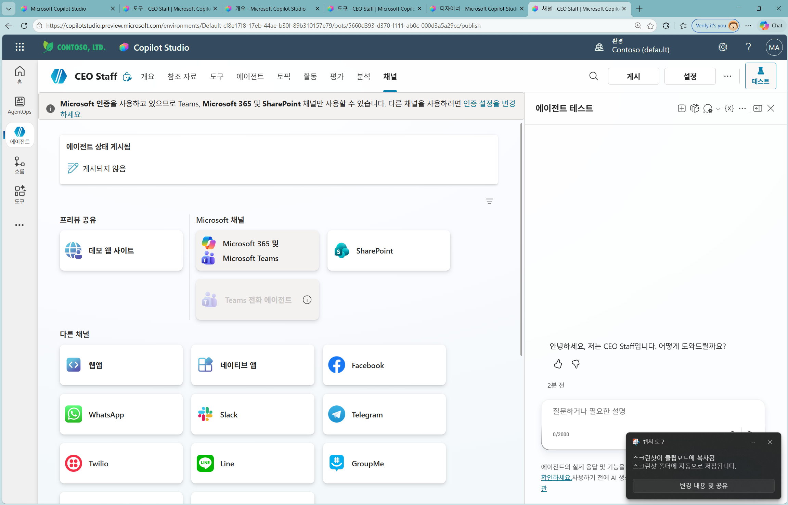
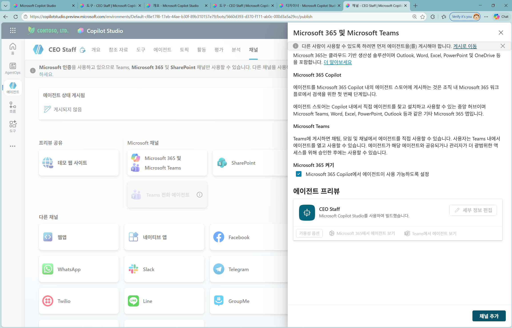
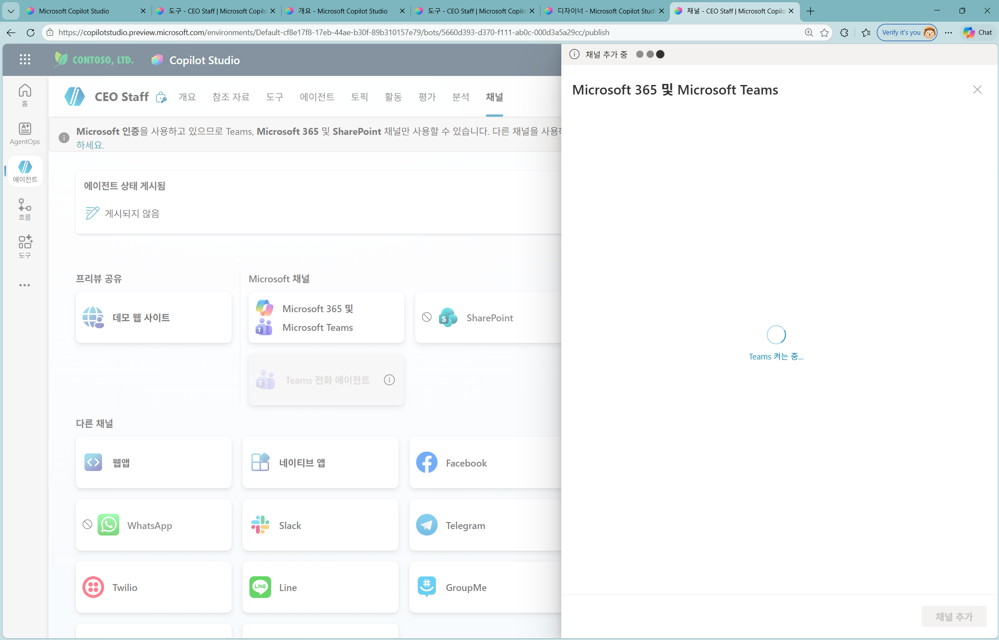
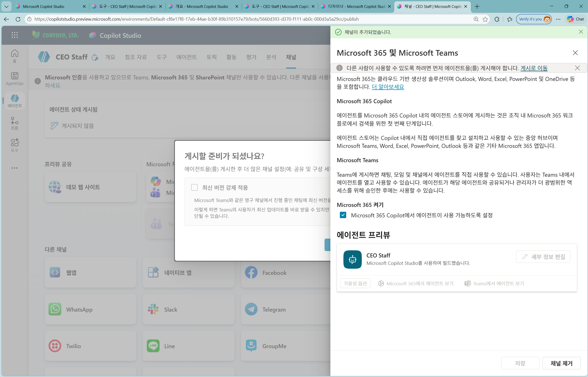
- ✓Microsoft 365 및 Microsoft Teams 채널이 에이전트에 추가된 상태
게시(Publish) — 이 에이전트 게시
게시• "이 에이전트 게시" 대화상자에서 [최신 버전 강제 적용] 체크를 확인합니다. (Teams 등 영구 채널의 진행 중 대화에 최신 버전을 즉시 적용)
• [게시]를 클릭합니다.
• 게시되면 "게시자 MOD Administrator … 게시됨"으로 표시되고, [Teams에서 에이전트 보기]·[Microsoft 365에서 에이전트 보기] 링크가 활성화됩니다.
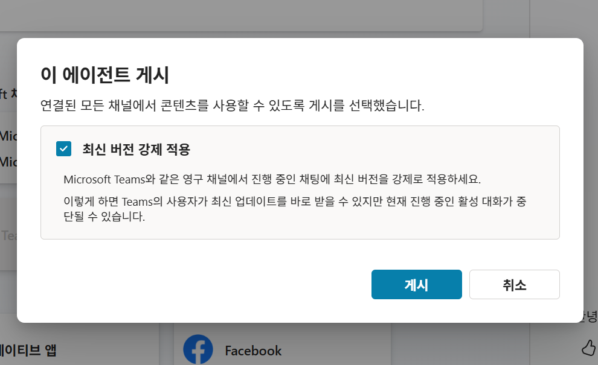
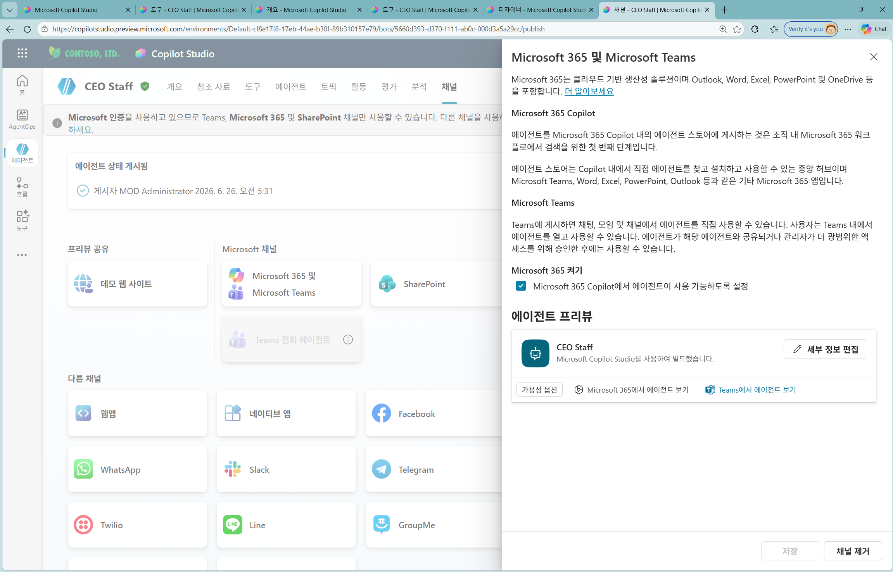
- ✓게시가 완료되고 [Teams에서 에이전트 보기] 링크가 활성화된 상태
Teams에 에이전트 추가 — 웹앱으로 열기 → Add
화면 조작• "Teams 데스크톱 앱으로 연락하세요" 화면에서 [웹 응용 프로그램을 대신 사용합니다]를 선택합니다.
• CEO Staff 추가 카드(Built using Microsoft Copilot Studio)가 나오면 [Add]를 누릅니다.
• "Added successfully!"가 표시되면 [Open]으로 대화방을 엽니다.
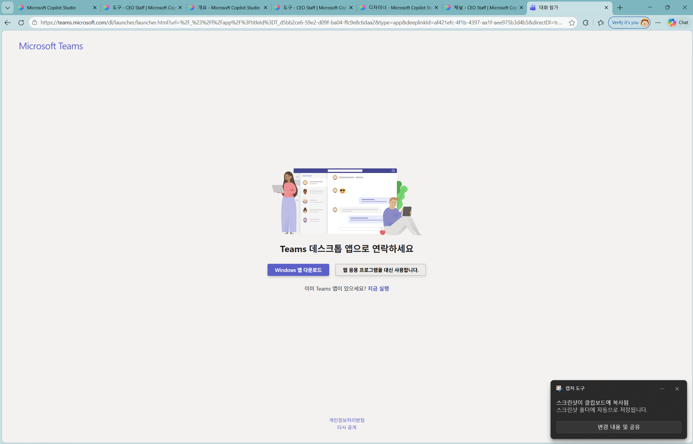
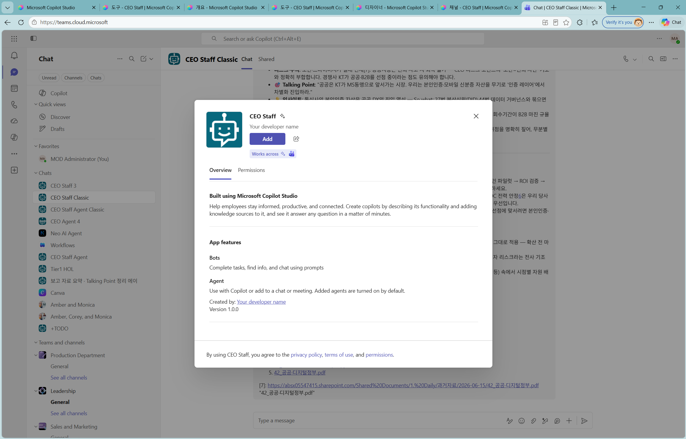
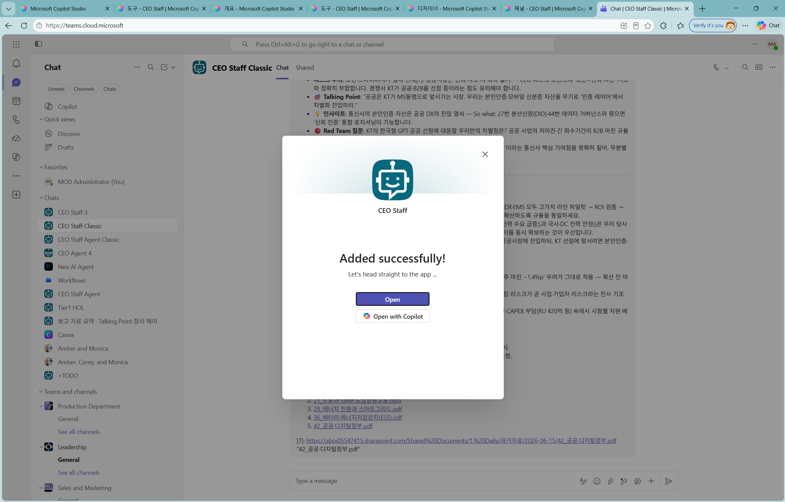
- ✓Teams에 CEO Staff가 추가되고 [Open]으로 대화방을 여는 상태
대화 시작 & Work IQ 연결 허용
확인• 에이전트가 OneDrive에 접근하기 위해 "계속하려면 연결하세요 — Work IQ OneDrive MCP" 연결 카드를 띄우면 [허용]을 누릅니다.
• 자격 증명으로 한 번 연결하면 설정이 기억되어 다음에 재사용됩니다.
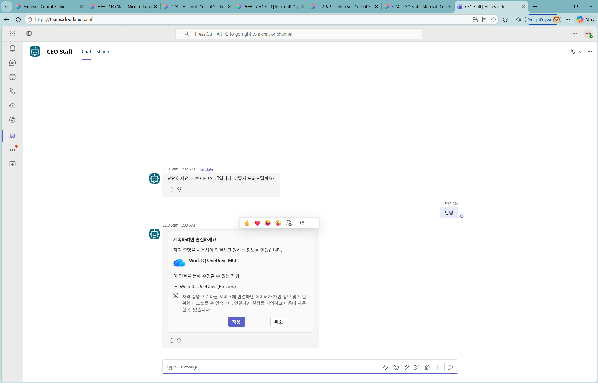
- ✓인사에 응답이 오고 Work IQ OneDrive MCP 연결을 [허용]한 상태
두 에이전트 수동 연결 확인 — GetReports → CEO Staff
확인① 첫 에이전트(목록 추출) 테스트 — CEO Staff GetReports Agent 테스트 패널에 날짜(예: 2026-06-26)를 입력하면, "1. Daily" 폴더에서 해당 날짜 폴더를 찾아
getFolderChildrenInMyOnedrive로 파일을 조회하고, 파일명을 파싱해 [FILES] 목록을 만듭니다.② 결과 전달 → 두 번째 에이전트(요약) — GetReports의 결과(목록)를 복사해 CEO Staff 테스트 패널에 붙여넣습니다. CEO Staff가 Work IQ 연결을 요청하면 [허용] →
readSmallBinaryFileFromMyOnedrive로 각 파일(PPTX/PDF) 본문을 읽어 요약합니다. 두 에이전트의 연결이 완성되었습니다.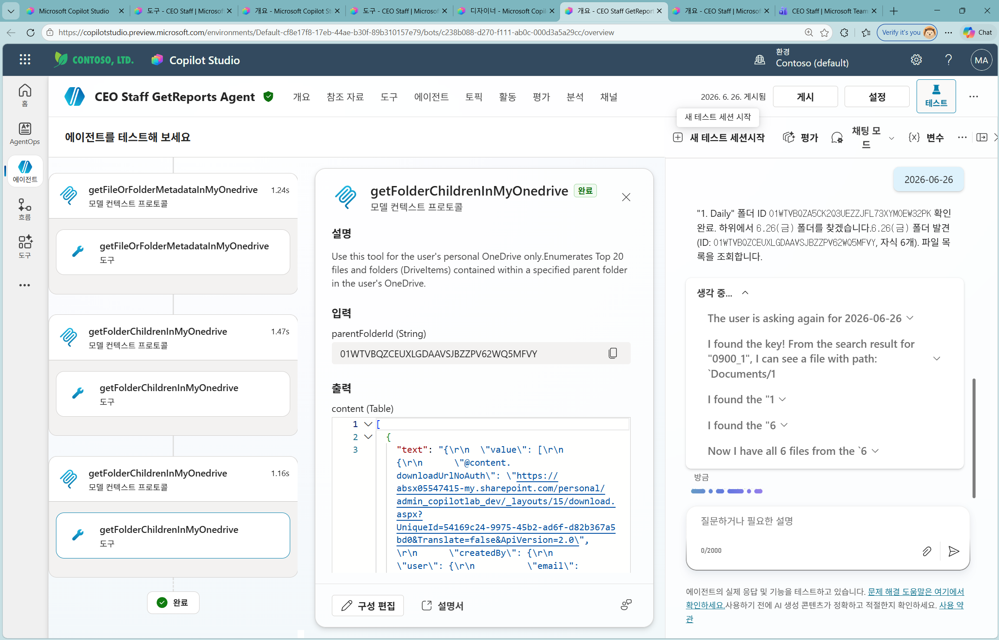

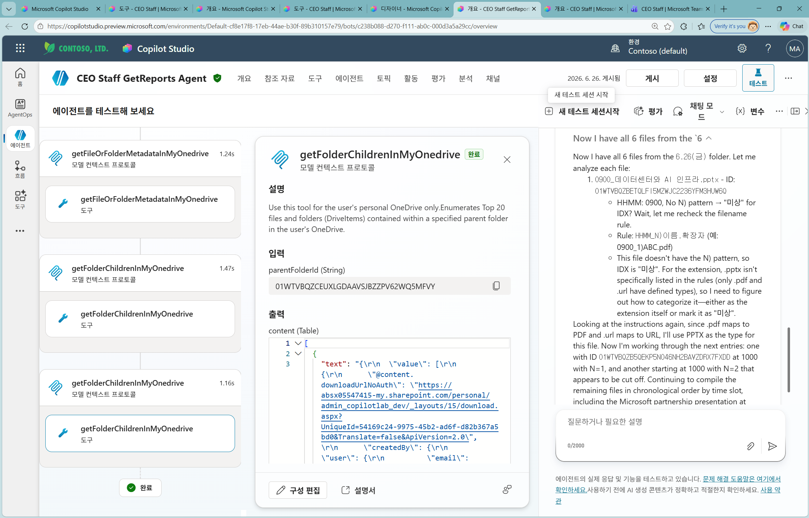
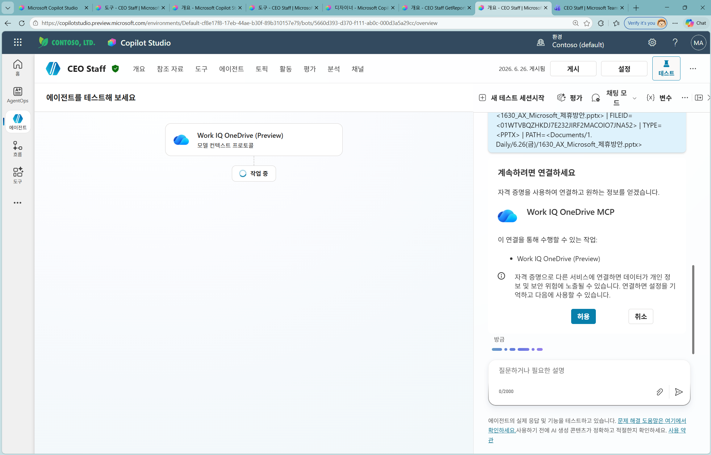
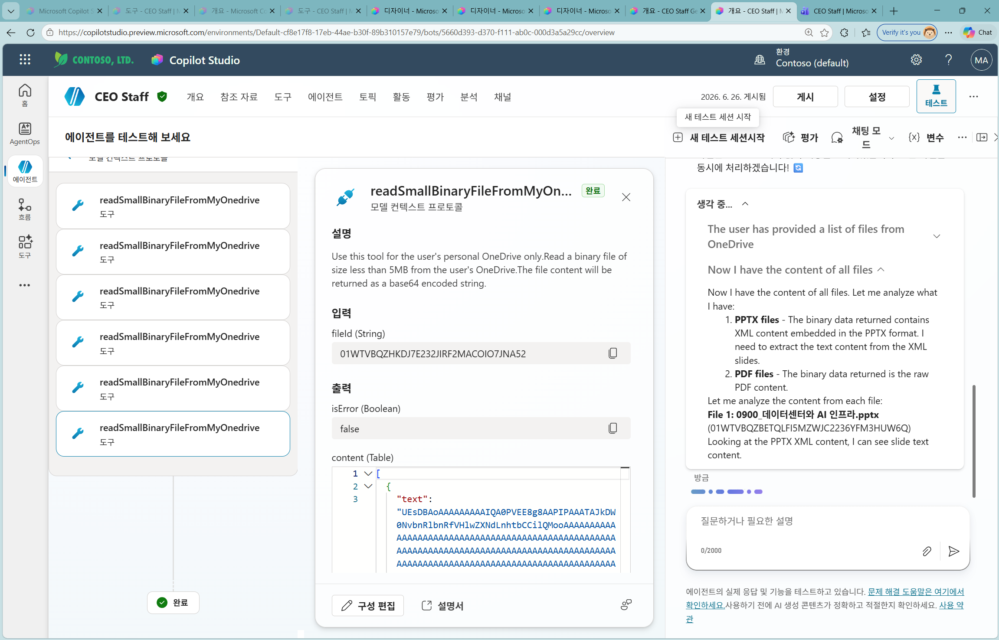
- ✓GetReports가 목록을 만들고, 그 목록을 받은 CEO Staff가 각 파일을 읽어 요약을 생성한 상태 — 두 에이전트 연결 완성
주기 실행 워크플로
두 에이전트를 정해진 시각에 자동 실행하는 클래식 워크플로를 만듭니다. 되풀이 트리거 → Run an agent(GetReports → CEO Staff) → Teams 채팅/채널 메시지 게시 순으로 연결하고 게시합니다.
New classic workflow — 새 클래식 워크플로 생성
화면 조작• 좌측 메뉴 [흐름](Workflows)으로 이동합니다.
• 우측 상단 [New Workflow] 버튼 옆 ▾(펼침)을 눌러 [New classic workflow]를 선택합니다. (에이전트와 동일하게 발신 신원이 안정적인 클래식 빌드)
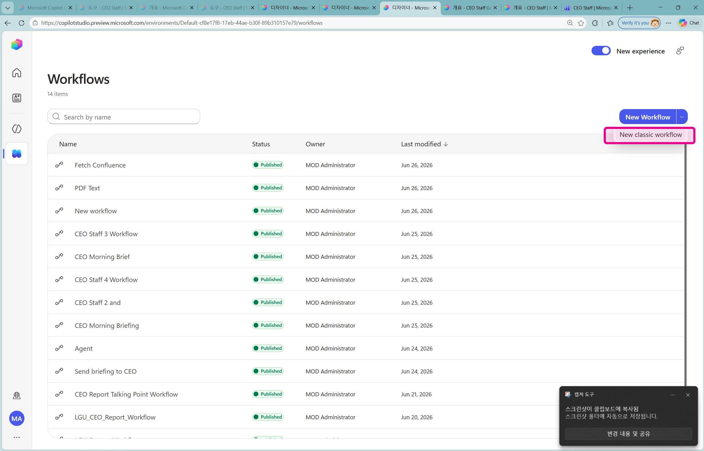
- ✓새 클래식 워크플로(에이전트 흐름) 디자이너가 열린 상태
트리거 추가 — 예약 → 되풀이
트리거• 기본 제공 도구에서 [예약](시계 아이콘)을 선택합니다.
• 이어서 트리거 유형으로 [되풀이]를 선택합니다. → 정해진 주기마다 워크플로가 자동 실행됩니다.
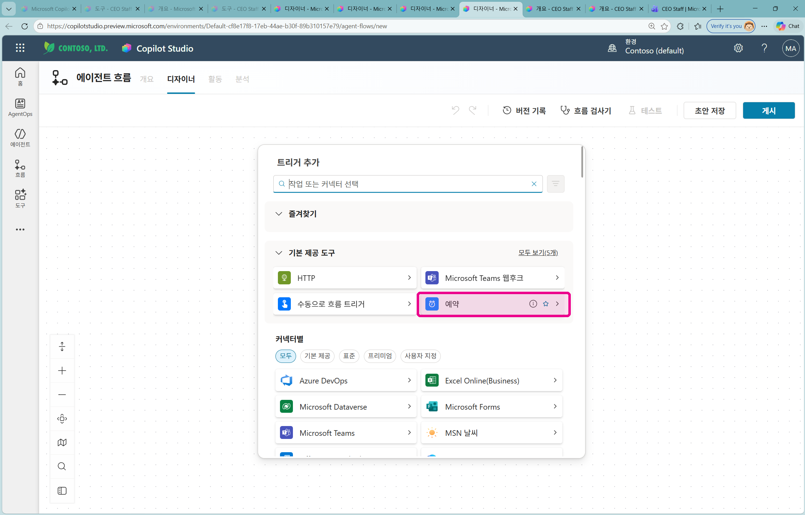
- ✓예약(되풀이) 트리거가 추가된 상태
되풀이 설정 — 간격 · 빈도 · 시간대 · 시작 시간
입력• 간격: 24 · 빈도: 시간 · 표준 시간대: (UTC+09:00) 서울
• 시작 시간: ISO 형식(예:
2026-06-26T07:00:00Z)→ 위 예시는 매일 1회, KST 기준으로 실행되도록 설정한 것입니다. (현장 요구에 맞게 조정)
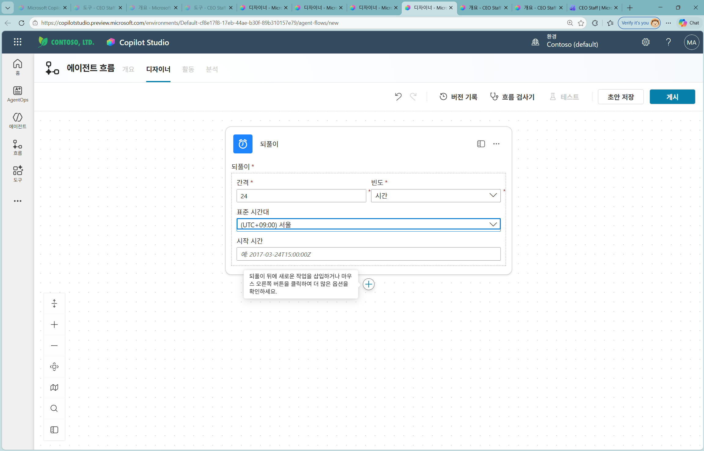
- ✓되풀이 주기·시간대·시작 시간이 설정된 상태
작업 추가 — Run an agent
작업 추가• 이 작업으로 워크플로가 에이전트를 직접 호출합니다. (앞서 만든 에이전트를 흐름의 한 단계로 실행)
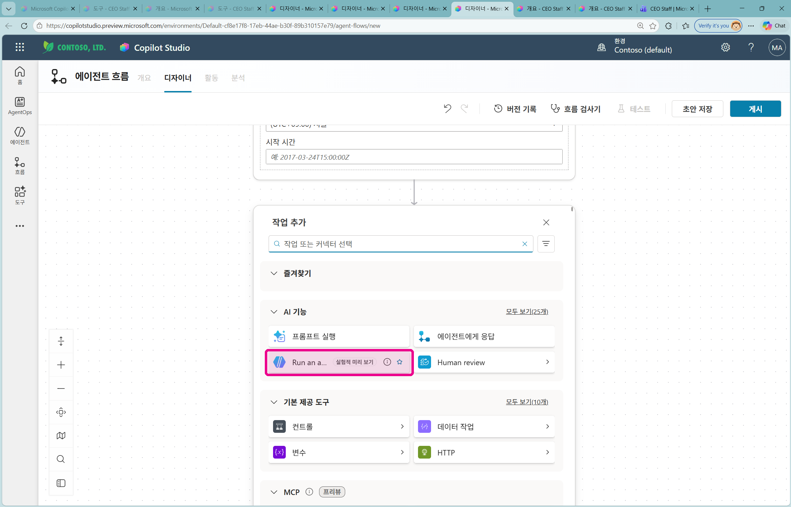
- ✓Run an agent 작업이 흐름에 추가된 상태
첫 번째 에이전트 실행 — GetReports + 메시지(날짜 식)
입력• [Message]에는 아래 문구를 입력합니다. @{…} 식은 입력하면 자동으로 fx 함수 칩으로 변환됩니다.
• 이 식은 오늘 날짜를 KST 기준 "M.dd"로 만들어, "그 날짜의 보고서를 분석"하도록 지시합니다.
• 입력 후 +로 다음 단계를 추가합니다.
@{formatDateTime(convertTimeZone(utcNow(), 'UTC', 'Korea Standard Time'), 'M.dd')} 일자 파일 분석해줘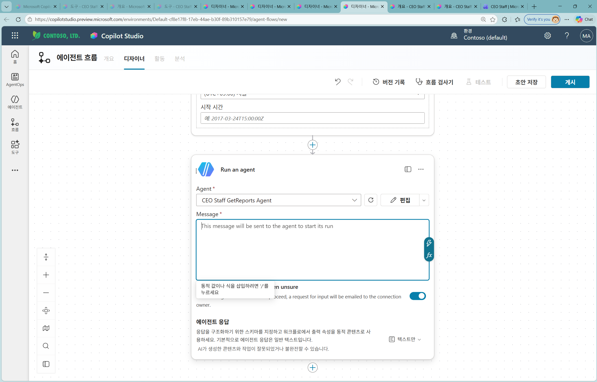
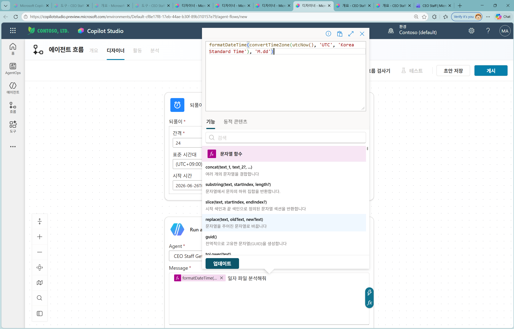
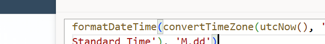
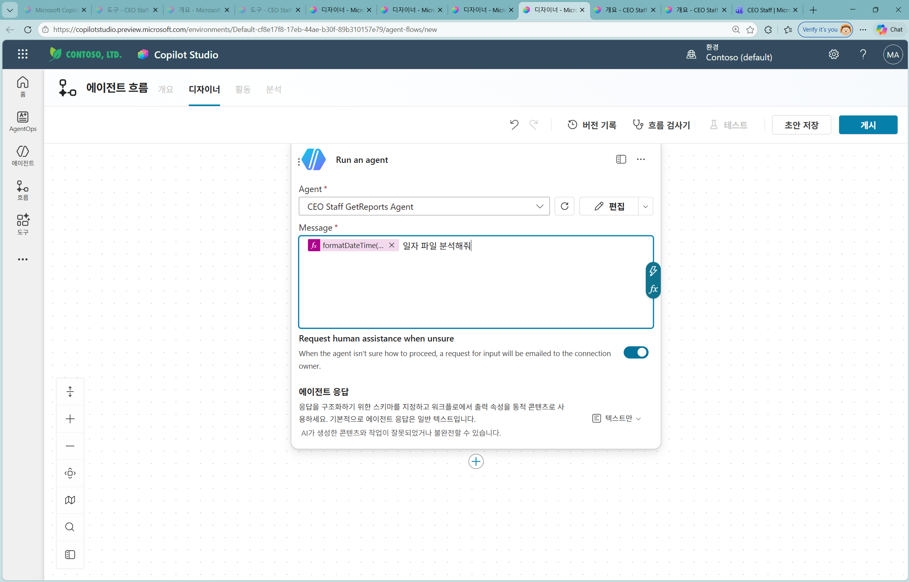
- ✓첫 Run an agent에 GetReports와 날짜 식 메시지가 설정된 상태
두 번째 에이전트 실행 추가 — CEO Staff
입력• 이 단계에서 첫 에이전트(GetReports)의 결과를 이어 받아 요약하게 됩니다. (다음 단계에서 연결)
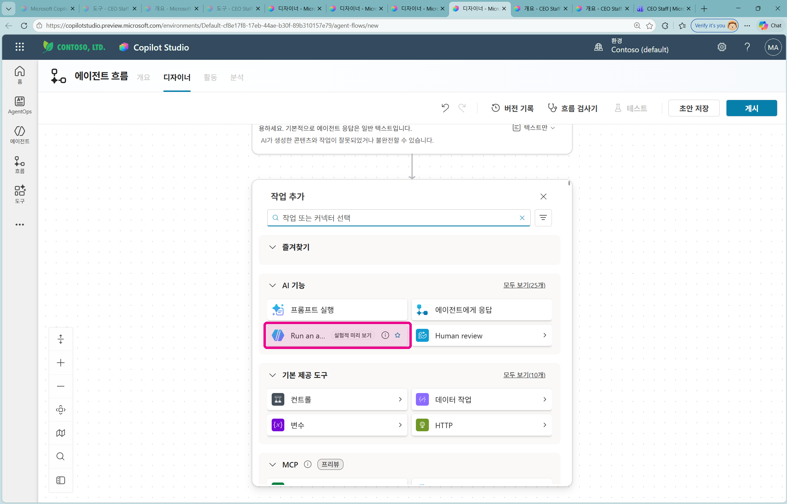
- ✓두 번째 Run an agent의 Agent가 CEO Staff로 설정된 상태
결과 연결 — 첫 에이전트 Response + "요약해줘"
입력• 첫 번째 단계 [Run CEO Staff GetReports Agent]의 [Response](에이전트 응답)를 선택합니다.
• 그 뒤에 "요약해줘"를 덧붙입니다. → GetReports가 만든 파일 목록을 받아 CEO Staff가 요약합니다.
- ✓두 번째 Message가 [첫 에이전트 Response] + "요약해줘"로 설정된 상태
(선택) 단계 이름 변경 — Run CEO Staff GetReports Agent / Run CEO Staff
선택Teams 작업 추가 — 채팅 또는 채널에서 메시지 게시
작업 추가게시 대상 설정 — Copilot Studio 에이전트 · 에이전트와 채팅 · CEO Staff · 수신자
입력• [다음으로 게시]: Microsoft Copilot Studio 에이전트
• [게시 위치]: 에이전트와 채팅
• [에이전트]: CEO Staff
• [Recipient]: 받는 사람 입력 (예:
admin → MOD Administrator)- ✓게시 대상(Copilot Studio 에이전트=CEO Staff · 에이전트와 채팅 · 수신자)이 설정된 상태
메시지 연결 → 초안 저장 → 게시
게시• [메시지]에서 번개(⚡) 버튼을 눌러 두 번째 단계 [Run CEO Staff]의 [Response](요약 결과)를 연결합니다.
• [초안 저장]을 누른 뒤 [게시]를 누르면 워크플로가 게시됩니다.
• "초안 흐름을 저장했습니다. 게시한 후 테스트하고 실행할 수 있습니다." 안내를 확인합니다. → 이로써 CHAPTER 1(만들기)이 끝났습니다.
- ✓워크플로 메시지가 [CEO Staff Response]로 연결되고 초안 저장·게시가 완료된 상태 — CHAPTER 1 완료
테스트 & 결과 확인
게시한 워크플로를 수동 실행해 두 에이전트가 이어 동작하는 과정을 모니터링하고, Teams로 도착한 요약 브리핑과 이어지는 Follow-up 대화까지 확인합니다.
흐름 테스트 — 수동 실행
테스트흐름 실행
실행실행 상태 확인 — 활동 · 세부 흐름도
모니터링1단계 결과 — Run CEO Staff GetReports Agent
확인• 안내: "6.26 일자 파일 분석해줘" (날짜 식이 적용된 입력)
• 입력: 에이전트 = CEO Staff GetReports Agent
• 출력: 에이전트 응답 =
[FOLDER] … [FILES] … — 해당 날짜 폴더의 파일 목록이 추출됩니다.- ✓GetReports 단계가 Succeeded이고 파일 목록([FILES])이 출력된 상태
2단계 결과 — Run CEO Staff 요약
확인• 디테일의 안내에는 첫 단계가 넘긴
[FOLDER] … [FILES] … 파일 목록이 입력으로 들어옵니다.• 실행이 완료되면 모든 보고서의 요약본(#제목 / #요약)이 결과로 출력됩니다. (각 파일을 Work IQ로 읽어 3줄 요약)
- ✓CEO Staff가 6개 파일을 읽어 #제목 / #요약 요약본을 생성한 상태
Teams 브리핑 전달 — 채팅 또는 채널에서 메시지 게시
확인• Parameters:
poster=Power Virtual Agents · body/bot=crcce_CEOStaff · recipient=admin@… · messageBody=요약• Teams에서 "수집된 정보를 바탕으로 6개 파일의 요약" 메시지를 수신합니다. 웹은 물론 모바일에서도 확인할 수 있습니다.
- ✓요약 브리핑이 Teams로 전달되어 수신된 상태
Follow-up 대화 — 컨텍스트 · 메모리
활용심화 질문 — AX × Microsoft 협업 전략 · 시나리오 완성
활용• 예) "Microsoft와 전략적 제휴할 수 있는 분야에 대한 아이디어 상세히 알려줘"
• SK 강점 × Microsoft 강점 × 기대 효과를 정리한 전략적 제휴 종합 요약 표로 답변합니다.
→ 두 에이전트 + 주기 실행 워크플로 + Teams 브리핑 + Follow-up까지, CEO 보고 브리핑 시나리오가 완성되었습니다.
- ✓보고 맥락을 활용한 심화 답변까지 확인 — CEO 보고 브리핑 시나리오 전체 완성